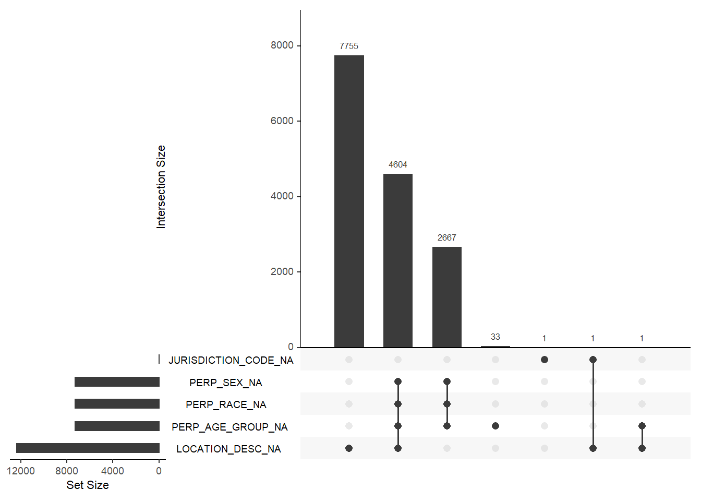

Chapter 3 Data transformation
Data cleaning is one of the major tasks before doing the data exploration.
The data we used had some missing values but they were read as empty strings. Doing null value analysis on empty strings is difficult, so the empty strings were converted into NA for all the columns. The data had some misprints in the age for perpetrators. Ages such as 1020, 940, 224 which cannot be possible in reality were present. Such values were removed from the dataset. We also created some additional columns of day of week, year, month, day so as to directly use these columns in data exploration. The interactive graph generated required data to be in a different form and also multiple files were generated for it which can be seen in the data folder
We can see there is a clear trend. Always dropping to minimum in the febraury and increasing until the mid-year and drops towards the end
Saturday and Sunday are more risky compared to other days.

We can see a sharp decline in n incidents over the years
We can see an increasing partner as the day increases Let’s see the same plot for each month